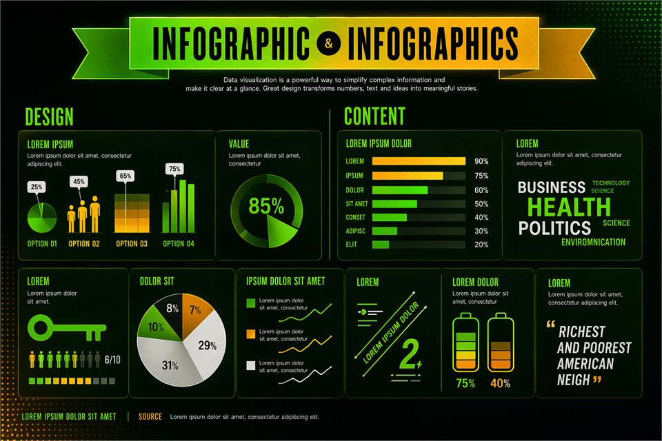
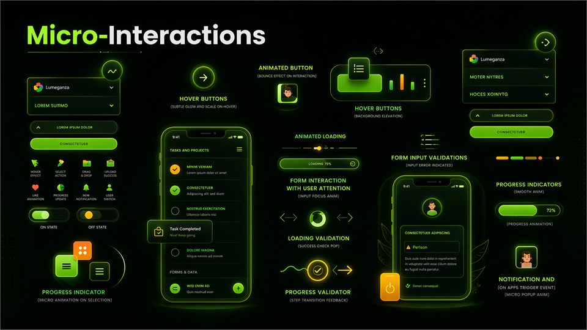
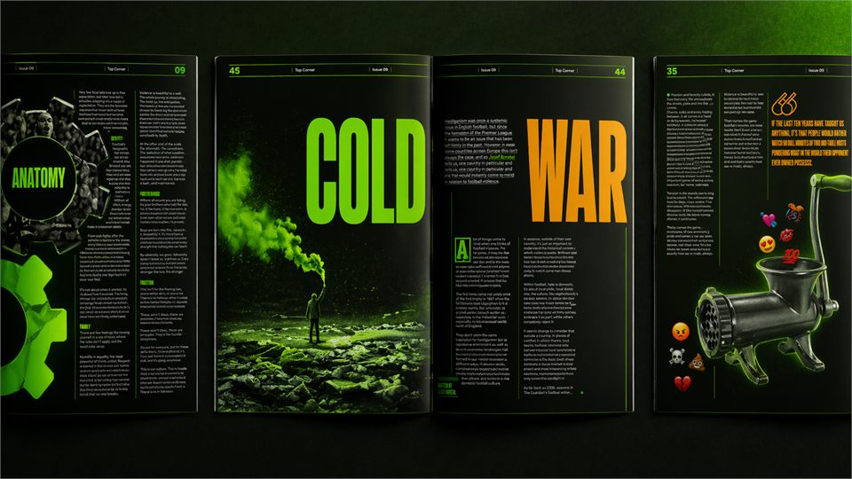

Profile
Graphic design student focused on visual communication, branding systems and digital portfolio presentation.
Graphic designer focused on social media, motion graphics and web design, with a portfolio built to feel clear, polished and easy to explore.
About
Creative Graphic Design student at George Brown College with one year remaining in the Advanced Diploma program. Strong foundation in typography, layout systems, and visual communication across print and digital formats. Experienced in developing editorial, branding, and web design projects using structured design processes. Seeking a Junior Graphic Designer or Internship opportunity to apply creative and technical skills in a professional environment.
Graphic design student focused on visual communication, branding systems and digital portfolio presentation.
I organize projects with clear hierarchy, clean structure and a strong balance between concept and execution.
Adobe Illustrator, Photoshop, InDesign, After Effects, typography, layout design, web basics and UI thinking.
Academic and portfolio-based projects in social media, campaign design, motion graphics and branded visual systems.
Work
I grouped my work by discipline so each area feels easier to browse, from web design and information systems to interaction studies, editorial work and image-led concepts.
Web / UI, Information Design, Ideas & Images, Interaction Design and Editorial Design keep the portfolio organized by focus.
Each area has its own place so the content feels focused, cleaner to scan and easier to update later.
Every section is ready to grow into fuller project stories with context, process, results and stronger presentation.
Portfolio
Here you can explore the work by discipline, from web design and information systems to editorial layouts, interaction studies and concept-driven image work. Each section keeps the projects focused and easier to navigate.
Use this folder for UI/UX, landing pages, portfolio websites and design systems without mixing them with campaign work.
Open Folder
Use this folder for visual explanations, structured data, hierarchy systems and clear communication pieces.
Open FolderUse this folder for concept development, image studies, visual experiments and idea-led compositions.
Open Folder
Use this folder for user flows, interface behavior, interaction concepts and digital experience studies.
Open Folder
Use this folder for publication layouts, editorial systems, spreads and typography-focused compositions.
Open FolderEach card opens a published area inside projects, so the portfolio can keep growing without losing clarity or visual order.
Services
Each service area is organized around clear deliverables, from brand identity and web design to growth-focused campaigns and motion content.
+ Additional digital design support
Contact
If you want to talk about freelance work, internship opportunities or a new design project, send me a message and I will get back to you soon. You can use the form, email me directly or reach out through my social links.
Use the form to share your timeline, project type and what you need help with.
Brand Design, Web Design, Campaign Design and Motion Design.